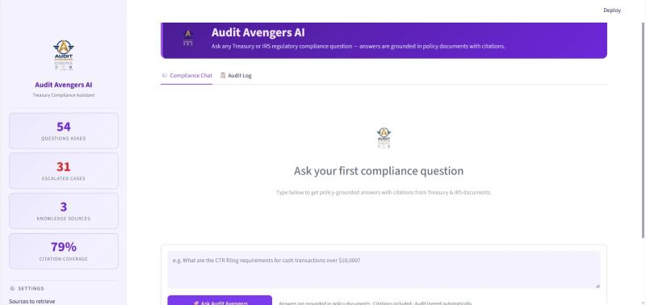

Audit Avengers AI
Independent project · AWS hackathon
A compliance assistant that makes complex policy guidance easier to navigate—with citations, confidence scoring, and human review.
View projectComputer Science student
Interested in Software Engineering, AI & Data Opportunities

Enthusiastic Computer Science student at George Mason University with strong foundation in Python, Java, C, SQL, and HTML. Skilled in data structures, algorithms, and object-oriented programming, with a passion for solving complex problems through technology. Awarded the NSF Design Incubator Fellowship for innovation in product design and entrepreneurship, where I developed a mobile budgeting app to support financial wellness among students. Dedicated to continuous learning in cybersecurity, software development, and data-driven solutions, and eager to contribute to impactful projects that combine creativity and technology.

Independent project · AWS hackathon
A compliance assistant that makes complex policy guidance easier to navigate—with citations, confidence scoring, and human review.
View project
Team project · 3rd Place — Best Project
An AI-powered community platform that helps interns and alumni discover relevant connections and stay engaged beyond the program.
View project
Data analysis · Audience & engagement
Exploring traffic, engagement, and audience demographics to understand how visitors interact with Grammy-related websites.
View project
Data analysis · Business trends
Using Python to explore revenue patterns, compare periods of growth and decline, and communicate business data visually.
View project
Explore my certifications and professional credentials in AI, data analysis, intercultural skills, and prototyping.
View certifications